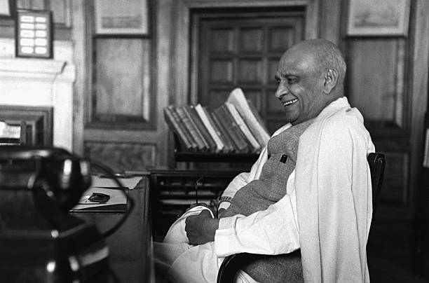

Biography
Sardar Vallabhbhai Patel, was an Indian independence activist and barrister who served as the first Deputy Prime Minister and Home Minister of India from 1947 to 1950. He was a senior leader of the Indian National Congress, who played a significant role in the Indian independence movement and India's political integration.  In India and elsewhere, he was often called Sardar, meaning "Chief" in Hindi, Urdu, Bengali and Persian. He acted as the Home Minister during the political integration of India and the Indo-Pakistani War of 1947. Patel was born in Nadiad, Kheda district and raised in the countryside of the state of Gujarat. He was a successful lawyer. One of Mahatma Gandhi's earliest political lieutenants, he organised peasants from Kheda, Borsad and Bardoli in Gujarat in non-violent civil disobedience against the British Raj, becoming one of the most influential leaders in Gujarat. Patel's commitment to national integration in the newly independent country earned him the sobriquet "Iron Man of India".
Quotes
Faith is of no evil in absence of strength
| Year | Event |
|---|---|
| 1875 | Vallabhbhai Jhaverbhai Patel was born in Nadiad, Gujarat on 31 October, 1875. |
| 1950 | After suffering a massive heart attack (his second), Patel died on 15 December, 1950, |